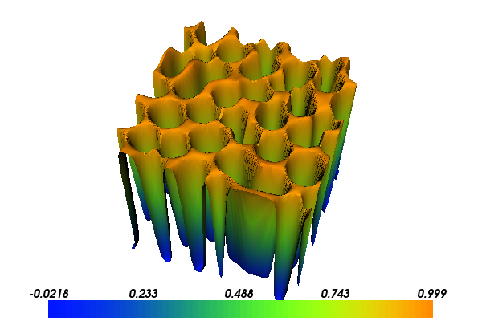

5. Cahn-Hilliard equation¶
This demo is implemented in a single Python file,
demo_cahn-hilliard.py, which contains both the variational
forms and the solver.
This example demonstrates the solution of a particular nonlinear time-dependent fourth-order equation, known as the Cahn-Hilliard equation. In particular it demonstrates the use of
- The built-in Newton solver
- Advanced use of the base class
NonlinearProblem - Automatic linearisation
- A mixed finite element method
- The \(\theta\)-method for time-dependent equations
- User-defined Expressions as Python classes
- Form compiler options
- Interpolation of functions
5.1. Equation and problem definition¶
The Cahn-Hilliard equation is a parabolic equation and is typically used to model phase separation in binary mixtures. It involves first-order time derivatives, and second- and fourth-order spatial derivatives. The equation reads:
where \(c\) is the unknown field, the function \(f\) is usually non-convex in \(c\) (a fourth-order polynomial is commonly used), \(n\) is the outward directed boundary normal, and \(M\) is a scalar parameter.
5.1.1. Mixed form¶
The Cahn-Hilliard equation is a fourth-order equation, so casting it in a weak form would result in the presence of second-order spatial derivatives, and the problem could not be solved using a standard Lagrange finite element basis. A solution is to rephrase the problem as two coupled second-order equations:
The unknown fields are now \(c\) and \(\mu\). The weak (variational) form of the problem reads: find \((c, \mu) \in V \times V\) such that
5.1.2. Time discretisation¶
Before being able to solve this problem, the time derivative must be dealt with. Apply the \(\theta\)-method to the mixed weak form of the equation:
where \(dt = t_{n+1} - t_{n}\) and \(\mu_{n+\theta} = (1-\theta) \mu_{n} + \theta \mu_{n+1}\). The task is: given \(c_{n}\) and \(\mu_{n}\), solve the above equation to find \(c_{n+1}\) and \(\mu_{n+1}\).
5.1.3. Demo parameters¶
The following domains, functions and time stepping parameters are used in this demo:
- \(\Omega = (0, 1) \times (0, 1)\) (unit square)
- \(f = 100 c^{2} (1-c)^{2}\)
- \(\lambda = 1 \times 10^{-2}\)
- \(M = 1\)
- \(dt = 5 \times 10^{-6}\)
- \(\theta = 0.5\)
With the above input the solution for \(c\) will look as follows:
{kind=link}
5.2. Implementation¶
This demo is implemented in the demo_cahn-hilliard.py file.
First, the Python module random and the dolfin
module are imported:
import random
from dolfin import *
A class which will be used to represent the initial conditions is then created:
# Class representing the intial conditions
class InitialConditions(Expression):
def __init__(self):
random.seed(2 + MPI.rank(mpi_comm_world()))
def eval(self, values, x):
values[0] = 0.63 + 0.02*(0.5 - random.random())
values[1] = 0.0
def value_shape(self):
return (2,)
It is a subclass of Expression. In the constructor
(__init__), the random number generator is seeded. If the program
is run in parallel, the random number generator is seeded using the
rank (process number) to ensure a different sequence of numbers on
each process. The function eval returns values for a function of
dimension two. For the first component of the function, a randomized
value is returned. The method value_shape declares that the
Expression is
vector valued with dimension two.
A class which will represent the Cahn-Hilliard in an abstract from for
use in the Newton solver is now defined. It is a subclass of
NonlinearProblem.
# Class for interfacing with the Newton solver
class CahnHilliardEquation(NonlinearProblem):
def __init__(self, a, L):
NonlinearProblem.__init__(self)
self.L = L
self.a = a
def F(self, b, x):
assemble(self.L, tensor=b)
def J(self, A, x):
assemble(self.a, tensor=A)
The constructor (__init__) stores references to the bilinear
(a) and linear (L) forms. These will used to compute the
Jacobian matrix and the residual vector, respectively, for use in a
Newton solver. The function F and J are virtual member
functions of NonlinearProblem. The function F computes the
residual vector b, and the function J computes the Jacobian
matrix A.
Next, various model parameters are defined:
# Model parameters
lmbda = 1.0e-02 # surface parameter
dt = 5.0e-06 # time step
theta = 0.5 # time stepping family, e.g. theta=1 -> backward Euler, theta=0.5 -> Crank-Nicolson
It is possible to pass arguments that control aspects of the generated code to the form compiler. The lines
# Form compiler options
parameters["form_compiler"]["optimize"] = True
parameters["form_compiler"]["cpp_optimize"] = True
tell the form to apply optimization strategies in the code generation phase
and the use compiler optimization flags when compiling the generated C++
code. Using the option ["optimize"] = True will generally result in
faster code (sometimes orders of magnitude faster for certain operations,
depending on the equation), but it may take considerably longer to generate
the code and the generation phase may use considerably more memory).
A unit square mesh with 97 (= 96 + 1) vertices in each direction is
created, and on this mesh a FunctionSpace \(V\) and a
MixedFunctionSpace space \(ME =
V \times V\) are defined:
# Create mesh and define function spaces
mesh = UnitSquareMesh(96, 96)
V = FunctionSpace(mesh, "Lagrange", 1)
ME = V*V
The space V involves first-order continuous Lagrange basis functions.
The mixed space is created using the * operator.
Trial and test functions of the space ME are now defined:
# Define trial and test functions
du = TrialFunction(ME)
q, v = TestFunctions(ME)
For the test functions, TestFunctions (note the ‘s’ at the end)
is used to define the scalar test functions q and v. The
TrialFunction
du has dimension two. Some mixed objects of the
Function class on
ME are defined to represent \(u = (c_{n+1}, \mu_{n+1})\) and
\(u0 = (c_{n}, \mu_{n})\), and these are then split into
sub-functions:
# Define functions
u = Function(ME) # current solution
u0 = Function(ME) # solution from previous converged step
# Split mixed functions
dc, dmu = split(du)
c, mu = split(u)
c0, mu0 = split(u0)
The line c, mu = split(u) permits direct access to the components
of a mixed function. Note that c and mu are references for
components of u, and not copies.
Initial conditions are created by using the class defined at the beginning of the demo and then interpolating the initial conditions into a finite element space:
# Create intial conditions and interpolate
u_init = InitialConditions()
u.interpolate(u_init)
u0.interpolate(u_init)
The first line creates an object of type InitialConditions.
The following two lines make u and u0 interpolants of u_init
(since u and u0 are finite element functions, they may not be able
to represent a given function exactly, but the function can be approximated
by interpolating it in a finite element space).
The chemical potential \(df/dc\) is computed using automated differentiation:
# Compute the chemical potential df/dc
c = variable(c)
f = 100*c**2*(1-c)**2
dfdc = diff(f, c)
The first line declares that c is a variable that some function
can be differentiated with respect to. The next line is the function
\(f\) defined in the problem statement, and the third line
performs the differentiation of f with respect to the variable
c.
It is convenient to introduce an expression for \(\mu_{n+\theta}\)
# mu_(n+theta)
mu_mid = (1.0-theta)*mu0 + theta*mu
which is then used in the definition of the variational forms:
# Weak statement of the equations
L0 = c*q*dx - c0*q*dx + dt*dot(grad(mu_mid), grad(q))*dx
L1 = mu*v*dx - dfdc*v*dx - lmbda*dot(grad(c), grad(v))*dx
L = L0 + L1
This is a statement of the time-discrete equations presented as part
of the problem statement, using UFL syntax. The linear forms for the
two equations can be summed into one form L, and then the
directional derivative of L can be computed to form the bilinear
form which represents the Jacobian matrix:
# Compute directional derivative about u in the direction of du (Jacobian)
a = derivative(L, u, du)
The DOLFIN Newton solver requires a NonlinearProblem object to solve a system of nonlinear
equations. Here, we are using the class CahnHilliardEquation,
which was declared at the beginning of the file, and which is a
sub-class of NonlinearProblem. We need to instantiate objects of both
CahnHilliardEquation and NewtonSolver:
# Create nonlinear problem and Newton solver
problem = CahnHilliardEquation(a, L)
solver = NewtonSolver()
solver.parameters["linear_solver"] = "lu"
solver.parameters["convergence_criterion"] = "incremental"
solver.parameters["relative_tolerance"] = 1e-6
The string "lu" passed to the Newton solver indicated that an LU
solver should be used. The setting of
parameters["convergence_criterion"] = "incremental" specifies that
the Newton solver should compute a norm of the solution increment to
check for convergence (the other possibility is to use "residual",
or to provide a user-defined check). The tolerance for convergence is
specified by parameters["relative_tolerance"] = 1e-6.
To run the solver and save the output to a VTK file for later visualization, the solver is advanced in time from \(t_{n}\) to \(t_{n+1}\) until a terminal time \(T\) is reached:
# Output file
file = File("output.pvd", "compressed")
# Step in time
t = 0.0
T = 50*dt
while (t < T):
t += dt
u0.vector()[:] = u.vector()
solver.solve(problem, u.vector())
file << (u.split()[0], t)
The string "compressed" indicates that the output data should be
compressed to reduce the file size. Within the time stepping loop, the
solution vector associated with u is copied to u0 at the
beginning of each time step, and the nonlinear problem is solved by
calling solver.solve(problem, u.vector()), with the new solution vector
returned in u.vector(). The
c component of the solution (the first component of u) is then
written to file at every time step.
Finally, the last computed solution for \(c\) is plotted to the screen:
plot(u.split()[0])
interactive()
The line interactive() holds the plot (waiting for a keyboard action).
5.3. Complete code¶
import random
from dolfin import *
# Class representing the intial conditions
class InitialConditions(Expression):
def __init__(self):
random.seed(2 + MPI.rank(mpi_comm_world()))
def eval(self, values, x):
values[0] = 0.63 + 0.02*(0.5 - random.random())
values[1] = 0.0
def value_shape(self):
return (2,)
# Class for interfacing with the Newton solver
class CahnHilliardEquation(NonlinearProblem):
def __init__(self, a, L):
NonlinearProblem.__init__(self)
self.L = L
self.a = a
def F(self, b, x):
assemble(self.L, tensor=b)
def J(self, A, x):
assemble(self.a, tensor=A)
# Model parameters
lmbda = 1.0e-02 # surface parameter
dt = 5.0e-06 # time step
theta = 0.5 # time stepping family, e.g. theta=1 -> backward Euler, theta=0.5 -> Crank-Nicolson
# Form compiler options
parameters["form_compiler"]["optimize"] = True
parameters["form_compiler"]["cpp_optimize"] = True
parameters["form_compiler"]["representation"] = "quadrature"
# Create mesh and define function spaces
mesh = UnitSquareMesh(96, 96)
V = FunctionSpace(mesh, "Lagrange", 1)
ME = V*V
# Define trial and test functions
du = TrialFunction(ME)
q, v = TestFunctions(ME)
# Define functions
u = Function(ME) # current solution
u0 = Function(ME) # solution from previous converged step
# Split mixed functions
dc, dmu = split(du)
c, mu = split(u)
c0, mu0 = split(u0)
# Create intial conditions and interpolate
u_init = InitialConditions()
u.interpolate(u_init)
u0.interpolate(u_init)
# Compute the chemical potential df/dc
c = variable(c)
f = 100*c**2*(1-c)**2
dfdc = diff(f, c)
# mu_(n+theta)
mu_mid = (1.0-theta)*mu0 + theta*mu
# Weak statement of the equations
L0 = c*q*dx - c0*q*dx + dt*dot(grad(mu_mid), grad(q))*dx
L1 = mu*v*dx - dfdc*v*dx - lmbda*dot(grad(c), grad(v))*dx
L = L0 + L1
# Compute directional derivative about u in the direction of du (Jacobian)
a = derivative(L, u, du)
# Create nonlinear problem and Newton solver
problem = CahnHilliardEquation(a, L)
solver = NewtonSolver()
solver.parameters["linear_solver"] = "lu"
solver.parameters["convergence_criterion"] = "incremental"
solver.parameters["relative_tolerance"] = 1e-6
# Output file
file = File("output.pvd", "compressed")
# Step in time
t = 0.0
T = 50*dt
while (t < T):
t += dt
u0.vector()[:] = u.vector()
solver.solve(problem, u.vector())
file << (u.split()[0], t)
plot(u.split()[0])
interactive()